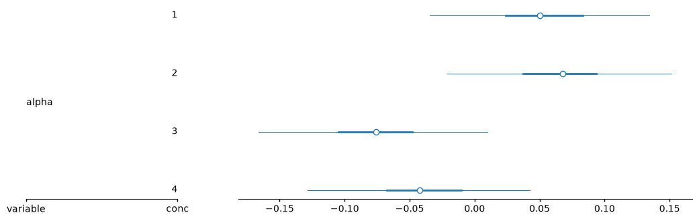
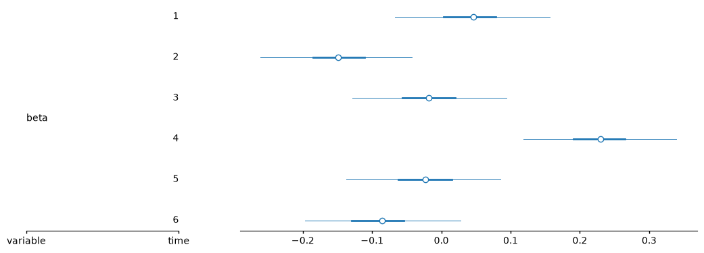
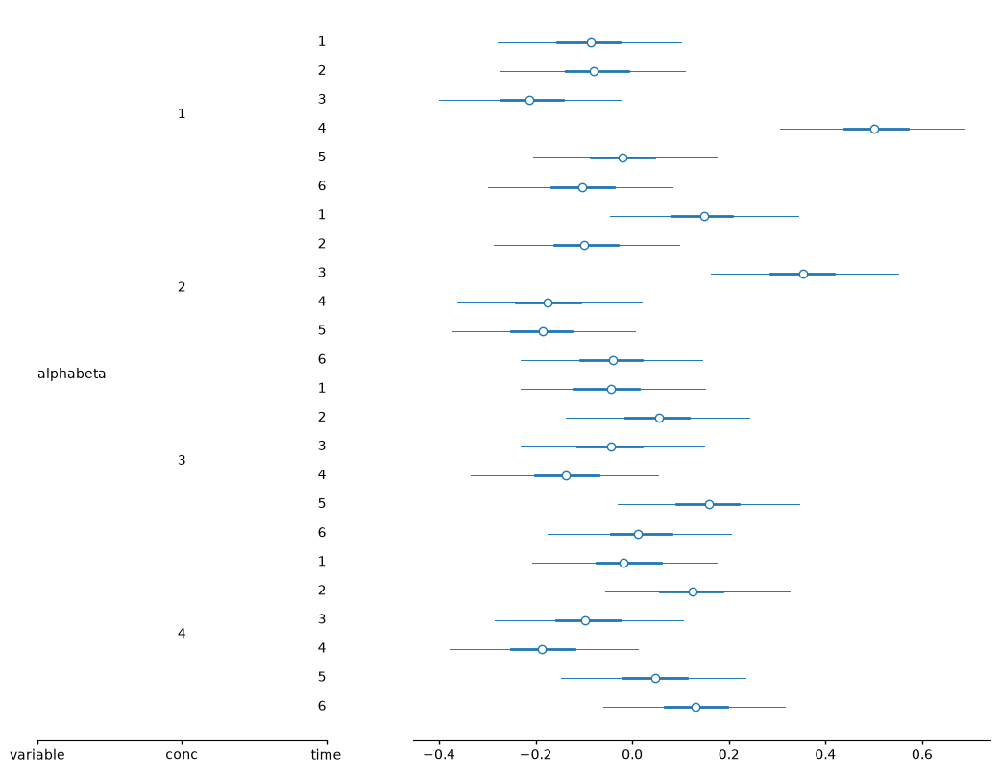

import pymc as pm
import numpy as np
import arviz as az
import pandas as pd
import pytensor.tensor.subtensor as st
from itertools import combinations
import arviz_plots as azp
rng = np.random.default_rng(6420)
9. Simvastatin*#
This one is about factorial designs (2-way ANOVA) with sum-to-zero and corner constraints.
Adapted from Unit 7: simvastatin.odc.
Data can be found here.
In a quantitative physiology lab II at Georgia Tech, students were asked to find a therapeutic model to test on MC3T3-E1 cell line to enhance osteoblastic growth. The students found a drug called Simvastatin, a cholesterol lowering drug to test on these cells. Using a control and three different concentrations, \(10^{-9}\), \(10^{-8}\) and \(10^{-7}\) M, cells were treated with the drug. These cells were plated on four, 24 well plates with each well plate having a different treatment.
To test for osteoblastic differentiation, an assay (pNPP) was used to test for alkaline phosphatase activity. The higher the alkaline phosphatase activity the better the cells are differentiating, and become more bone like. This assay was performed 6 times total within 11 days. Each time the assay was performed, four wells from each plate were used.
Note
We can now implement the sum-to-zero (STZ) constraints in PyMC with the pm.ZeroSumNormal class. Previously, we were doing something similar to the corner constraint approach, below, for STZ constraints.
data = pd.read_csv("../data/simvastatin_data.tsv", sep="\t")
data.head(3)
| apa | conc | time | |
|---|---|---|---|
| 0 | 0.062 | 1 | 1 |
| 1 | 0.517 | 1 | 1 |
| 2 | 0.261 | 1 | 1 |
# set up alternate coordinates, the ID3 or clusters column
conc_idx, conc = pd.factorize(data["conc"])
time_idx, time = pd.factorize(data["time"])
coords = {"conc": conc, "time": time, "id": data.index}
conc_idx, time_idx, coords
(array([0, 0, 0, 0, 1, 1, 1, 1, 2, 2, 2, 2, 3, 3, 3, 3, 0, 0, 0, 0, 1, 1,
1, 1, 2, 2, 2, 2, 3, 3, 3, 3, 0, 0, 0, 0, 1, 1, 1, 1, 2, 2, 2, 2,
3, 3, 3, 3, 0, 0, 0, 0, 1, 1, 1, 1, 2, 2, 2, 2, 3, 3, 3, 3, 0, 0,
0, 0, 1, 1, 1, 1, 2, 2, 2, 2, 3, 3, 3, 3, 0, 0, 0, 0, 1, 1, 1, 1,
2, 2, 2, 2, 3, 3, 3, 3]),
array([0, 0, 0, 0, 0, 0, 0, 0, 0, 0, 0, 0, 0, 0, 0, 0, 1, 1, 1, 1, 1, 1,
1, 1, 1, 1, 1, 1, 1, 1, 1, 1, 2, 2, 2, 2, 2, 2, 2, 2, 2, 2, 2, 2,
2, 2, 2, 2, 3, 3, 3, 3, 3, 3, 3, 3, 3, 3, 3, 3, 3, 3, 3, 3, 4, 4,
4, 4, 4, 4, 4, 4, 4, 4, 4, 4, 4, 4, 4, 4, 5, 5, 5, 5, 5, 5, 5, 5,
5, 5, 5, 5, 5, 5, 5, 5]),
{'conc': Index([1, 2, 3, 4], dtype='int64'),
'time': Index([1, 2, 3, 4, 5, 6], dtype='int64'),
'id': RangeIndex(start=0, stop=96, step=1)})
Model 1 with sum-to-zero constraints#
Here the intercept (mu0) is the grand mean and the effect coefficients alpha and beta are deviations from that mean.
def contrasts(var, index):
"""Calculate differences between levels with names like "alpha[low] - alpha[high]".
var: pytensor.tensor.var.TensorVariable
index: pandas.Index
"""
name = var.name
for i, j in combinations(range(index.size), 2):
a, b = index[i], index[j]
pm.Deterministic(f"{name}[{a}] - {name}[{b}]", var[i] - var[j])
with pm.Model(coords=coords) as m:
apa_data = pm.Data("apa_data", data.apa.to_numpy())
time_idx_data = pm.Data("time_idx_data", time_idx, dims="id")
conc_idx_data = pm.Data("conc_idx_data", conc_idx, dims="id")
mu0 = pm.Normal("mu0", 0, sigma=10)
alpha = pm.ZeroSumNormal("alpha", sigma=10, dims="conc")
beta = pm.ZeroSumNormal("beta", sigma=10, dims="time")
alphabeta = pm.ZeroSumNormal(
"alphabeta", sigma=10, dims=("conc", "time"), n_zerosum_axes=2
)
sigma = pm.Exponential("sigma", 0.05)
mu = (
mu0
+ alpha[conc_idx_data]
+ beta[time_idx_data]
+ alphabeta[conc_idx_data, time_idx_data]
)
pm.Normal("apa", mu, sigma=sigma, observed=apa_data, dims="id")
# calculate differences between levels (except interaction term)
contrasts(alpha, coords["conc"])
contrasts(beta, coords["time"])
trace = pm.sample(2000, random_seed=rng)
az.summary(trace)
| mean | sd | eti89_lb | eti89_ub | ess_bulk | ess_tail | r_hat | mcse_mean | mcse_sd | |
|---|---|---|---|---|---|---|---|---|---|
| mu0 | 0.2391 | 0.0253 | 0.2 | 0.28 | 19367 | 6390 | 1.00 | 0.00018 | 0.00014 |
| alpha[1] | 0.05 | 0.0434 | -0.018 | 0.12 | 19343 | 6864 | 1.00 | 0.00031 | 0.00022 |
| alpha[2] | 0.068 | 0.0439 | -0.0013 | 0.14 | 20016 | 5929 | 1.00 | 0.00031 | 0.00024 |
| alpha[3] | -0.0756 | 0.0438 | -0.15 | -0.006 | 19047 | 6142 | 1.00 | 0.00032 | 0.00024 |
| alpha[4] | -0.0424 | 0.0435 | -0.11 | 0.027 | 19073 | 6271 | 1.00 | 0.00032 | 0.00023 |
| beta[1] | 0.0461 | 0.057 | -0.046 | 0.14 | 19412 | 6097 | 1.00 | 0.00041 | 0.0003 |
| beta[2] | -0.1494 | 0.0556 | -0.24 | -0.061 | 19350 | 6124 | 1.00 | 0.0004 | 0.00029 |
| beta[3] | -0.0179 | 0.057 | -0.11 | 0.073 | 17580 | 5752 | 1.00 | 0.00043 | 0.00032 |
| beta[4] | 0.2301 | 0.0561 | 0.14 | 0.32 | 16549 | 6390 | 1.00 | 0.00044 | 0.00031 |
| beta[5] | -0.0229 | 0.0573 | -0.11 | 0.068 | 20291 | 6442 | 1.00 | 0.0004 | 0.00029 |
| beta[6] | -0.086 | 0.0568 | -0.18 | 0.0034 | 18592 | 5704 | 1.00 | 0.00042 | 0.0003 |
| alphabeta[1, 1] | -0.087 | 0.0964 | -0.24 | 0.066 | 20980 | 6156 | 1.00 | 0.00067 | 0.00049 |
| alphabeta[1, 2] | -0.08 | 0.098 | -0.24 | 0.076 | 18063 | 5692 | 1.00 | 0.00073 | 0.00053 |
| alphabeta[1, 3] | -0.212 | 0.0967 | -0.37 | -0.06 | 19971 | 6483 | 1.00 | 0.00068 | 0.00049 |
| alphabeta[1, 4] | 0.502 | 0.0975 | 0.34 | 0.66 | 20413 | 6263 | 1.00 | 0.00069 | 0.00047 |
| alphabeta[1, 5] | -0.02 | 0.098 | -0.17 | 0.14 | 18142 | 6511 | 1.00 | 0.00073 | 0.00052 |
| alphabeta[1, 6] | -0.103 | 0.098 | -0.26 | 0.051 | 20428 | 6269 | 1.00 | 0.00068 | 0.00051 |
| alphabeta[2, 1] | 0.148 | 0.098 | -0.0084 | 0.3 | 19555 | 5980 | 1.00 | 0.0007 | 0.00052 |
| alphabeta[2, 2] | -0.1 | 0.098 | -0.26 | 0.055 | 16270 | 5747 | 1.00 | 0.00077 | 0.00055 |
| alphabeta[2, 3] | 0.354 | 0.099 | 0.2 | 0.51 | 18340 | 5783 | 1.00 | 0.00073 | 0.00052 |
| alphabeta[2, 4] | -0.175 | 0.098 | -0.33 | -0.017 | 18195 | 5970 | 1.00 | 0.00072 | 0.00051 |
| alphabeta[2, 5] | -0.186 | 0.097 | -0.34 | -0.031 | 20152 | 6378 | 1.00 | 0.00068 | 0.00051 |
| alphabeta[2, 6] | -0.04 | 0.095 | -0.19 | 0.11 | 17799 | 6059 | 1.00 | 0.00071 | 0.00051 |
| alphabeta[3, 1] | -0.044 | 0.098 | -0.2 | 0.11 | 18466 | 6109 | 1.00 | 0.00072 | 0.00052 |
| alphabeta[3, 2] | 0.056 | 0.098 | -0.099 | 0.21 | 16245 | 6137 | 1.00 | 0.00077 | 0.00055 |
| alphabeta[3, 3] | -0.044 | 0.0971 | -0.2 | 0.11 | 18611 | 6422 | 1.00 | 0.00071 | 0.00049 |
| alphabeta[3, 4] | -0.138 | 0.099 | -0.3 | 0.019 | 18870 | 6094 | 1.00 | 0.00072 | 0.00052 |
| alphabeta[3, 5] | 0.158 | 0.097 | 0.0037 | 0.32 | 17591 | 5904 | 1.00 | 0.00073 | 0.00053 |
| alphabeta[3, 6] | 0.012 | 0.095 | -0.14 | 0.17 | 17760 | 6355 | 1.00 | 0.00071 | 0.00052 |
| alphabeta[4, 1] | -0.018 | 0.098 | -0.17 | 0.14 | 19132 | 5723 | 1.00 | 0.00071 | 0.00051 |
| alphabeta[4, 2] | 0.124 | 0.097 | -0.03 | 0.28 | 17544 | 5711 | 1.00 | 0.00073 | 0.00053 |
| alphabeta[4, 3] | -0.097 | 0.1 | -0.26 | 0.062 | 19698 | 6239 | 1.00 | 0.00071 | 0.00051 |
| alphabeta[4, 4] | -0.188 | 0.0991 | -0.35 | -0.029 | 22197 | 6110 | 1.00 | 0.00067 | 0.00046 |
| alphabeta[4, 5] | 0.047 | 0.097 | -0.11 | 0.2 | 18133 | 5939 | 1.00 | 0.00072 | 0.00051 |
| alphabeta[4, 6] | 0.131 | 0.0965 | -0.019 | 0.28 | 20952 | 5831 | 1.00 | 0.00067 | 0.00047 |
| sigma | 0.2457 | 0.021 | 0.21 | 0.28 | 7291 | 6009 | 1.00 | 0.00024 | 0.00019 |
| alpha[1] - alpha[2] | -0.018 | 0.071 | -0.13 | 0.095 | 18927 | 6339 | 1.00 | 0.00052 | 0.00039 |
| alpha[1] - alpha[3] | 0.126 | 0.0711 | 0.013 | 0.24 | 18412 | 6002 | 1.00 | 0.00052 | 0.00039 |
| alpha[1] - alpha[4] | 0.092 | 0.0711 | -0.021 | 0.21 | 19875 | 6288 | 1.00 | 0.00051 | 0.00036 |
| alpha[2] - alpha[3] | 0.144 | 0.072 | 0.028 | 0.26 | 20630 | 6115 | 1.00 | 0.0005 | 0.00038 |
| alpha[2] - alpha[4] | 0.1103 | 0.0713 | -0.0013 | 0.22 | 21299 | 6158 | 1.00 | 0.00049 | 0.00037 |
| alpha[3] - alpha[4] | -0.033 | 0.0709 | -0.15 | 0.079 | 19106 | 5843 | 1.00 | 0.00051 | 0.00037 |
| beta[1] - beta[2] | 0.196 | 0.0867 | 0.056 | 0.33 | 19730 | 5903 | 1.00 | 0.00062 | 0.00045 |
| beta[1] - beta[3] | 0.064 | 0.0888 | -0.078 | 0.21 | 18633 | 5372 | 1.00 | 0.00065 | 0.00047 |
| beta[1] - beta[4] | -0.184 | 0.0881 | -0.33 | -0.044 | 18132 | 6421 | 1.00 | 0.00065 | 0.00048 |
| beta[1] - beta[5] | 0.069 | 0.0888 | -0.075 | 0.21 | 21217 | 6260 | 1.00 | 0.00061 | 0.00044 |
| beta[1] - beta[6] | 0.132 | 0.0876 | -0.0072 | 0.27 | 18151 | 5567 | 1.00 | 0.00065 | 0.00046 |
| beta[2] - beta[3] | -0.132 | 0.0873 | -0.27 | 0.0081 | 18861 | 6015 | 1.00 | 0.00064 | 0.00046 |
| beta[2] - beta[4] | -0.38 | 0.0866 | -0.52 | -0.24 | 18883 | 5484 | 1.00 | 0.00063 | 0.00047 |
| beta[2] - beta[5] | -0.127 | 0.0871 | -0.27 | 0.011 | 19507 | 5757 | 1.00 | 0.00062 | 0.00044 |
| beta[2] - beta[6] | -0.063 | 0.0872 | -0.2 | 0.076 | 21211 | 5791 | 1.00 | 0.0006 | 0.00043 |
| beta[3] - beta[4] | -0.248 | 0.086 | -0.39 | -0.11 | 16229 | 6277 | 1.00 | 0.00068 | 0.0005 |
| beta[3] - beta[5] | 0.005 | 0.0885 | -0.13 | 0.15 | 19341 | 5797 | 1.00 | 0.00064 | 0.00048 |
| beta[3] - beta[6] | 0.068 | 0.089 | -0.073 | 0.21 | 16545 | 5395 | 1.00 | 0.00069 | 0.0005 |
| beta[4] - beta[5] | 0.253 | 0.0885 | 0.11 | 0.39 | 19987 | 6402 | 1.00 | 0.00063 | 0.00046 |
| beta[4] - beta[6] | 0.316 | 0.0872 | 0.18 | 0.45 | 18864 | 6533 | 1.00 | 0.00064 | 0.00047 |
| beta[5] - beta[6] | 0.063 | 0.0884 | -0.079 | 0.2 | 18931 | 6243 | 1.00 | 0.00064 | 0.00046 |
for var in ["alpha", "beta", "alphabeta"]:
azp.plot_forest(
trace,
var_names=[var],
combined=True,
ci_kind="hdi",
ci_probs=(0.5, 0.95),
).show()



Model 2 with corner constraints#
The constraint type changes the interpretation of the coefficients, so the two aren’t directly comparable. This model also has different priors. Here, the intercept is the mean at the reference level for each factor, and the concentration effects for alpha and beta are differences from those reference levels when the other factor is held fixed at its reference level.
with pm.Model(coords=coords) as m:
apa_data = pm.Data("apa_data", data.apa.to_numpy())
time_idx_data = pm.Data("time_idx_data", time_idx, dims="id")
conc_idx_data = pm.Data("conc_idx_data", conc_idx, dims="id")
mu0 = pm.Normal("mu0", 0, tau=0.0001)
_alpha = pm.Normal("_alpha", 0, tau=0.0001, dims="conc")
_beta = pm.Normal("_beta", 0, tau=0.0001, dims="time")
_alphabeta = pm.Normal("_alphabeta", 0, tau=0.0001, dims=("conc", "time"))
tau = pm.Gamma("tau", 0.001, 0.001)
sigma = pm.Deterministic("sigma", 1 / tau**0.5)
# corner constraints: sets the first element of a dimension to zero
alpha = pm.Deterministic(
"alpha", st.set_subtensor(_alpha[0], 0), dims="conc"
)
beta = pm.Deterministic("beta", st.set_subtensor(_beta[0], 0), dims="time")
_alphabeta = st.set_subtensor(_alphabeta[:, 0], 0)
alphabeta = pm.Deterministic(
"alphabeta",
st.set_subtensor(_alphabeta[0, :], 0),
dims=("conc", "time"),
)
mu = (
mu0
+ alpha[conc_idx_data]
+ beta[time_idx_data]
+ alphabeta[conc_idx_data, time_idx_data]
)
pm.Normal("apa", mu, tau=tau, observed=apa_data, dims="id")
contrasts(alpha, coords["conc"])
contrasts(beta, coords["time"])
trace = pm.sample(2000, random_seed=rng)
az.summary(trace, var_names="~_", filter_vars="like", kind="stats")
| mean | sd | eti89_lb | eti89_ub | |
|---|---|---|---|---|
| mu0 | 0.25 | 0.12 | 0.055 | 0.45 |
| tau | 17 | 2.9 | 13 | 22 |
| sigma | 0.24 | 0.021 | 0.21 | 0.28 |
| alpha[1] | 0 | 0 | 0 | 0 |
| alpha[2] | 0.25 | 0.17 | -0.027 | 0.53 |
| alpha[3] | -0.088 | 0.17 | -0.37 | 0.19 |
| alpha[4] | -0.031 | 0.18 | -0.31 | 0.25 |
| beta[1] | 0 | 0 | 0 | 0 |
| beta[2] | -0.2 | 0.18 | -0.48 | 0.084 |
| beta[3] | -0.19 | 0.17 | -0.47 | 0.089 |
| beta[4] | 0.76 | 0.17 | 0.49 | 1 |
| beta[5] | -0.0067 | 0.18 | -0.29 | 0.27 |
| beta[6] | -0.15 | 0.18 | -0.43 | 0.13 |
| alphabeta[1, 1] | 0 | 0 | 0 | 0 |
| alphabeta[1, 2] | 0 | 0 | 0 | 0 |
| alphabeta[1, 3] | 0 | 0 | 0 | 0 |
| alphabeta[1, 4] | 0 | 0 | 0 | 0 |
| alphabeta[1, 5] | 0 | 0 | 0 | 0 |
| alphabeta[1, 6] | 0 | 0 | 0 | 0 |
| alphabeta[2, 1] | 0 | 0 | 0 | 0 |
| alphabeta[2, 2] | -0.25 | 0.24 | -0.64 | 0.14 |
| alphabeta[2, 3] | 0.33 | 0.25 | -0.06 | 0.73 |
| alphabeta[2, 4] | -0.9 | 0.25 | -1.3 | -0.51 |
| alphabeta[2, 5] | -0.4 | 0.25 | -0.79 | -0.0065 |
| alphabeta[2, 6] | -0.17 | 0.25 | -0.56 | 0.22 |
| alphabeta[3, 1] | 0 | 0 | 0 | 0 |
| alphabeta[3, 2] | 0.1 | 0.25 | -0.28 | 0.51 |
| alphabeta[3, 3] | 0.13 | 0.25 | -0.27 | 0.52 |
| alphabeta[3, 4] | -0.67 | 0.25 | -1.1 | -0.27 |
| alphabeta[3, 5] | 0.14 | 0.25 | -0.26 | 0.53 |
| alphabeta[3, 6] | 0.075 | 0.25 | -0.32 | 0.46 |
| alphabeta[4, 1] | 0 | 0 | 0 | 0 |
| alphabeta[4, 2] | 0.15 | 0.25 | -0.25 | 0.54 |
| alphabeta[4, 3] | 0.052 | 0.25 | -0.34 | 0.44 |
| alphabeta[4, 4] | -0.74 | 0.25 | -1.1 | -0.35 |
| alphabeta[4, 5] | 0.0076 | 0.25 | -0.39 | 0.4 |
| alphabeta[4, 6] | 0.17 | 0.25 | -0.22 | 0.58 |
| alpha[1] - alpha[2] | -0.25 | 0.17 | -0.53 | 0.027 |
| alpha[1] - alpha[3] | 0.088 | 0.17 | -0.19 | 0.37 |
| alpha[1] - alpha[4] | 0.031 | 0.18 | -0.25 | 0.31 |
| alpha[2] - alpha[3] | 0.34 | 0.17 | 0.063 | 0.61 |
| alpha[2] - alpha[4] | 0.28 | 0.17 | 0.0013 | 0.56 |
| alpha[3] - alpha[4] | -0.057 | 0.17 | -0.33 | 0.22 |
| beta[1] - beta[2] | 0.2 | 0.18 | -0.084 | 0.48 |
| beta[1] - beta[3] | 0.19 | 0.17 | -0.089 | 0.47 |
| beta[1] - beta[4] | -0.76 | 0.17 | -1 | -0.49 |
| beta[1] - beta[5] | 0.0067 | 0.18 | -0.27 | 0.29 |
| beta[1] - beta[6] | 0.15 | 0.18 | -0.13 | 0.43 |
| beta[2] - beta[3] | -0.0044 | 0.17 | -0.28 | 0.27 |
| beta[2] - beta[4] | -0.96 | 0.17 | -1.2 | -0.68 |
| beta[2] - beta[5] | -0.19 | 0.18 | -0.47 | 0.096 |
| beta[2] - beta[6] | -0.045 | 0.18 | -0.33 | 0.23 |
| beta[3] - beta[4] | -0.96 | 0.17 | -1.2 | -0.68 |
| beta[3] - beta[5] | -0.18 | 0.18 | -0.47 | 0.1 |
| beta[3] - beta[6] | -0.04 | 0.18 | -0.32 | 0.24 |
| beta[4] - beta[5] | 0.77 | 0.18 | 0.49 | 1 |
| beta[4] - beta[6] | 0.92 | 0.18 | 0.63 | 1.2 |
| beta[5] - beta[6] | 0.14 | 0.18 | -0.14 | 0.42 |
%load_ext watermark
%watermark -n -u -v -iv
Last updated: Sun, 18 Oct 2026
Python implementation: CPython
Python version : 3.14.7
IPython version : 9.16.1
arviz : 1.3.0
arviz_plots: 1.3.1
numpy : 2.4.6
pandas : 3.0.5
pymc : 6.3.1
pytensor : 3.3.0